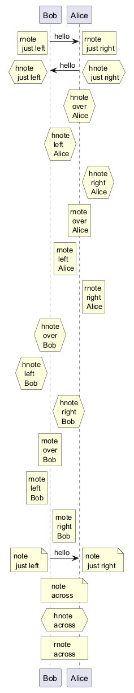

@startuml
!pragma teoz true
Bob -> Alice : hello
rnote right: rnote\n just right
rnote left: rnote\n just left
Bob <- Alice: hello
hnote right: hnote\n just right
hnote left: hnote\n just left
hnote over Alice: hnote\n over \n Alice
hnote left Alice: hnote\n left \n Alice
hnote right Alice: hnote\n right \n Alice
rnote over Alice: rnote\n over \n Alice
rnote left Alice: rnote\n left \n Alice
rnote right Alice: rnote\n right \n Alice
hnote over Bob: hnote\n over \n Bob
hnote left Bob: hnote\n left \n Bob
hnote right Bob: hnote\n right \n Bob
rnote over Bob: rnote\n over \n Bob
rnote left Bob: rnote\n left \n Bob
rnote right Bob: rnote\n right \n Bob
Bob -> Alice : hello
note right: note\n just right
note left: note\n just left
note across: note\nacross
hnote across: hnote\nacross
rnote across: rnote\nacross
@enduml